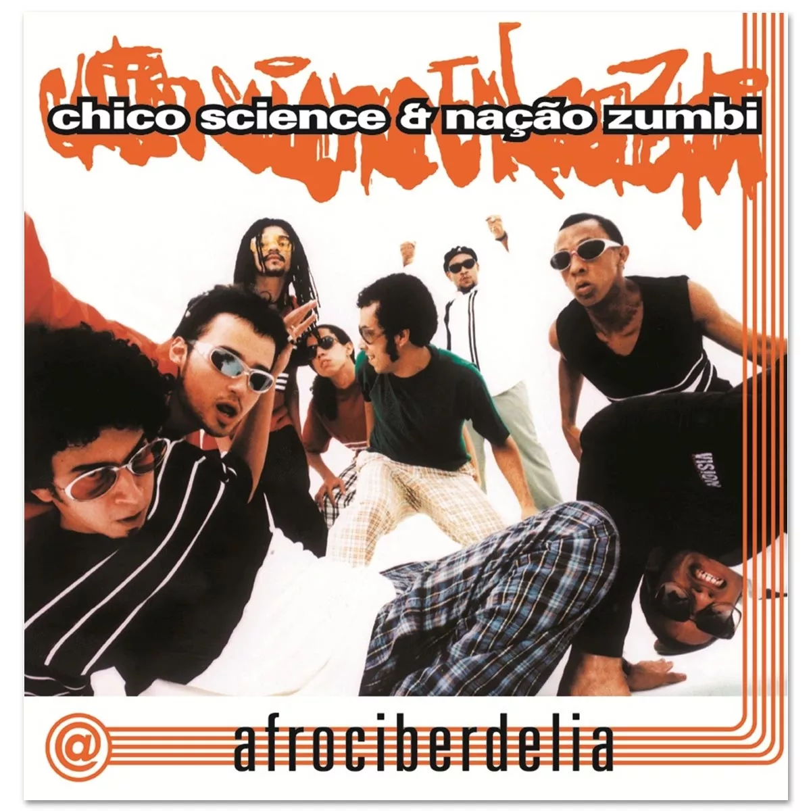

Thailson Júlio
Desenvolvedor, code review, designer e webmaster.
Matheus Vitório
Gerente de projeto, analista de dados, coordenador de equipe e desenvolvedor.

Lyranjor Ferreira
Analista de requisitos
Lyranjor
Gerente de projeto, analista de dados e desenvolvedor.
A cultura recifense: um toque de mangue
Devemos salientar que os aspectos culturais que podemos citar, de maneira que observamos em toda entrevista é visto que a população consta como citação de artistas locais e suas músicas originárias do tema Manguezal e a cidade do Recife, sendo esses de tamanha importância para nossa cultura e nosso aprendizado, podemos citar como artistas a serem referenciados: Chico Science, Academia da Berlinda, Nação Zumbi e Alceu Valença, entre outros demais artistas locais, que como vemos em trechos de músicas famosas de nossa sociedade, o artista utiliza a música como forma de apresentação de um pensamento crítico para os males que afligem nossa sociedade e abordam temas tão pouco debatidos, musicas essas como:
-
ETNIA
- Somos todos juntos uma miscigenação
- E não podemos fugir da nossa etnia
- Índios, brancos, negros e mestiços
- Nada de errado em seus princípios
- O seu e o meu são iguais
- Corre nas veias sem parar
- Costumes, é folclore é tradição
- Capoeira que rasga o chão
- Samba que sai da favela acabada
- É hip hop na minha embolad
- (Nação Zumbi, 1996)
- 
Vemos que a cultura do mangue está introduzida em nossa sociedade, desde a música, comidas locais que utilizam, frutos da fauna e flora do manguezal, até mesmo a moda que é introduzida em nossa sociedade, baseando-se na cultura do Manguebeat e no Coco de Roda, onde notamos que toda cultura recifense tem um toque do mangue em sua vida e seu cotidiano.
OBJETIVOS DO PROJETO: RAÍZES DO MANGUE
- Desenvolver estratégias para reduzir os impactos ambientais da obra;
- Sensibilizar os moradores de Recife sobre as consequências do desmatamento nos manguezais;
- Projetar avaliações dos danos ambientais e suas consequências;
- Combater ativamente o desmatamento nos manguezais;
- Usar nosso site para educar sobre o meio ambiente;
- Criar métodos educacionais para nossas propostas;
- Criar parcerias com empresas e organizações para promover nossos princípio
- Propor alternativas menos prejudiciais para os manguezais e o projeto Parque das Graças.
Thailson Júlio
Desenvolvedor, code review, designer e webmaster.
Matheus Vitório
Gerente de projeto, analista de dados, coordenador de equipe e desenvolvedor.
Lyranjor Ferreira
Engenheiro de software, desenvolvedor e analista de requisitos.
Gabriel Cauã
Code review, text review e editor de imagem.
DESCRIÇÃO DA ATIVIDADES
-
LOCAL DE EXECUÇÃO
- O local de execução será no bairro do derby, graças e torre, de maneira que estes já citados em projeto fazem parte da região ao qual a obra se encontra e pretende abranger, apesar de ser intitulado como Parque das Graças, o mesmo abrange esses três bairros, conforme visto em mapa.
-
PÚBLICO-ALVO DAS INTREVISTAS
- O público-alvo será a população do entorno do Parque, sendo estes integrantes do bairro, transeuntes, os possíveis utilizadores diários, toda população Recifense, demais bairros e públicos que possam utilizar o espaço, já que ao se tratar de um parque público fica tão somente a população sua escolha para sua utilização e sua demanda esperada.
-
MÉTODOS DE ABORDAGEM - MAPA DE EMPATIA
- Os métodos de abordagem que estipulamos até o momento se seguiram às entrevistas da população dos bairros do entorno da obra e da região metropolitana do Recife, utilizando- se utilizando de perguntas já confeccionadas e aceitas pela professora Jennifer. Buscando a coleta de dados e opiniões para a criação do contexto de nosso site.
-
ASSIM FICANDO AS PERGUNTAS ELENCADAS PARA CONSTRUÇÃO DA PERSONA:
- • Idade;
- • Local da entrevista;
- • Região em que reside;
- • Profissão;
- • Renda;
- • Sexo/Gênero;
- • Formação acadêmica.
-
E PARA COLETA DE DADOS E OPINIÕES DA POPULAÇÃO:
- • Qual sua opinião sobre a obra do parque das graças?
- • Quais problemas podemos enfrentar no futuro devido à realização dessa obra?
- • O que essa obra influencia no seu dia a dia?
- • Opine sobre os benefícios e malefícios desta obra?
- • Qual sua opinião sobre a educação ambiental e sua importância para nossa sociedade?
- • Quais os problemas ambientais recorrentes observados em Recife?
- • Existem soluções para esses problemas? Se sim, quais?
RESULTADOS ESPERADOS
-
FORMAÇÃO PROFISSIONAL
- Para nós como equipe, um projeto com um tema tão recorrente e necessário, nos faz construir o interesse para áreas diversas de nossa atuação, buscando soluções que possam integrar nossa área de atuação e o projeto, tais como utilização do site para propagação de notícias, informações e consolidação de petições. Vemos, também, que outras habilidades são construídas a partir de um projeto dessa magnitude, tais como, a consolidação do trabalho em equipe, o desenvolvimento pessoal, a soft-skills como liderança, empatia, inteligência emocional, busca, proatividade e a constante da criação de projetos e suas experiências para lidar com prazos estipulados.
-
PÚBLICO-ALVO DE CONSCIENTIZAÇÃO
- Esperamos com esse projeto, a conscientização, debate e educação do público-alvo, visto que buscamos não só a análise e debate acadêmico, como a busca da solução para o problema abordado, pois, elencamos em nossa estrutura de projeto, a formação de debates, educação e conscientização da população sobre um mal, que nos assola anualmente e possivelmente piorará. Dessa forma, esperamos que nosso projeto, possa, por entrevistas, debates e conscientização, concretizar o pensamento crítico e político sobre o tema abordado, não só buscando a educação como procurando meios de solucionar, tal demanda que constantemente nos assola.
-
JORNADAS
-
Estabelecemos nossas jornadas baseadas em encontros semanais, para estipularmos grupos de conscientização da população local, no intuito em que 6 pessoas de nosso grupo, vão a campo com panfletos demonstrativos de nosso projeto e de nossa causa, assim explicando melhor para cada pessoa abordada, o problema que temos que enfrentar e conscientizando a população.
Com isso buscamos sempre realizar entrevistas para levantamentos de dados e por meio de monitoramento diário, fotografar o andamento da obra e com isso estimar e estipular metas de combate a destruição de nosso mangue. Por fim, estabelecemos dessa maneira duas frentes de combate sendo o nosso esforço em campo, e também constituímos nosso esforço online para sempre manter a população informada buscando sempre o debate cívico e a educação ambiental da população.
-
SOLUÇÃO
- Através de consultas, estudos de materiais literários e sites, além de estudos de campo conseguimos estipular e almejar soluções a curto e longo prazo para o problema apresentado, ficando determinadas da seguinte forma:
- Utilização do site de maneira informativa e por meio dessa plataforma utilizar para educação da população, não tão somente do problema, quanto o valor do manguezal e de toda sua importância;
- Busca de ONGs para apoio da causa e fazer com que sejamos uma voz mais ativa em nossa sociedade;
- Criação de material para debate e educação, tanto em nosso site quanto físico em modelo de panfletos;
- Buscar contato com o Governo do Estado para melhor implementação do projeto, visando a não destruição do manguezal;
- Realização de campanhas “boca a boca” nas adjacências e em toda região metropolitana do Recife para informar sobre o problema;
- Buscar cientistas da área e possíveis pensadores sobre o tema, para criação de um projeto mais “verde” e com o devido cuidado com a natureza;
- Estipulação de metas de combate a destruição e poluição, de maneira que seja implementada com ONGs e se possível com apoio do Governo e de empresas;
- Busca de financiamento coletivo e de parceiros para ajuda na causa e para maior divulgação;
- Criar mais maneiras de divulgação e educação da população, não tão somente sendo site e panfleto, buscando através de rádios, comerciais de tevês e jornais;
- Implementar em nosso projeto formas de reciclagem e limpeza de trechos afetados pela poluição;
- Capacitar melhor as pessoas que dependem e vivem do manguezal, para que esses além de utilizar venham a conservar e buscar alternativas ao combate da poluição e do desmatamento;
- Utilizar nossos rios de maneira mais acessível a população, buscando por meio de embarcações da população ribeirinha e do próprio Governo, tornar nossos braços de rios vivos e mais ricos culturalmente;
Por fim, são ideias que buscaremos implementar ou já estamos realizando, ficando dessa maneira como objetivos para o nosso projeto.